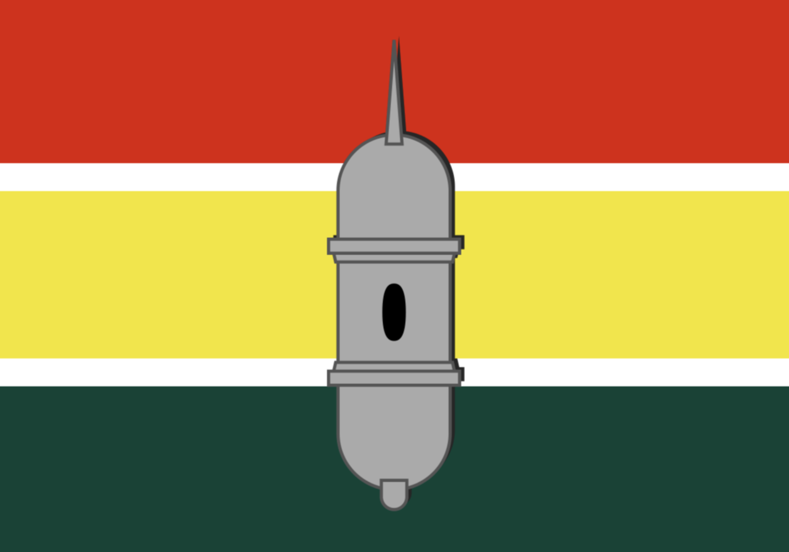

Estados e algumas capitais
Rio Branco

Rio Branco é a capital do estado do Acre (AC).
Área territorial: 8.835 km²
População: 350mil habitantes.
Curiosidade: de “Capital da Natureza”, em razão dos seus atributos naturais.
Maceió

Maceió é a capital do estado de Alagoas(AL).
Área territorial: 1.012.387 km²
População: 350mil habitantes.
Curiosidade: Muito procurada pelos turistas nos meses de verão centro financeiro, social e cultural de Alagoas.
Manaus

Manaus é a capital do estado do Amazonas(AM).
Área territorial: 1.012.387 km²
População: 350mil habitantes.
Curiosidade: Muito procurada pelos turistas nos meses de verão centro financeiro, social e cultural de Alagoas.
Macapá

Macapá é a capital do estado do Amapá.
Área territorial: 6.407 km²
População: 493.634 habitantes.
Curiosidade: a única que não faz ligação com outras capitais por meio de rodovias.
Salvador

Salvador é a capital do estado da Bahia(BA).
Área territorial: 693,8 km²
População: 2,7 milhões de habitantes
Curiosidade: foi a PRIMEIRA capital do Brasil.
São Paulo

São Paulo capital do estado de São Paulo
Área territorial: 1.521 km²
População: 12 milhões de habitantes
Curiosidade: maior cidade do país é considerada uma metrópole mundial brasileira.